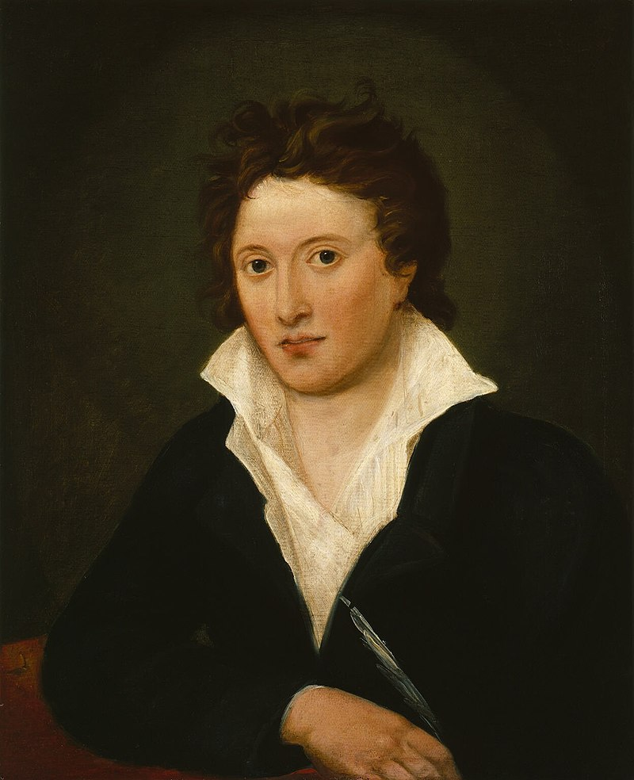

Welcome to the mini digital edition of Mary Shelley's Frankenstein. Made as a project by Eleni Gkovedarou for Text as Data II, taught at the University of Antwerp.
Mary Wollstonecraft Shelley (portrait by Richard Rothwell)

Percy Bysshe Shelley (portrait by Amelia Curran)